Image Manipulation
This is my writeup for the first assignment! Please run the associated code in the root directory first by running:
# download needed images wget https://i.imgur.com/fyDOvfz.jpg image1.jpg wget https://i.imgur.com/0DANhnn.jpg image2.jpg # run generator script for this assignment cargo run --example image-manipulation
This will generate the images referenced by this document. Alternatively, see the online copy at TODO (if this is the online copy, you can ignore all of this).
I used image-rs for my base implementation of the exercises: it's a handy high level library for working with images in Rust, although its abstractions come with some annoyances sometimes.
Exercise 1: dimming
Recall from lecture that the value of each pixel represents its brightness. Implement a function that takes in an image and returns the same image, but half as bright as the original image.
Writing such a function is pretty straightforward - although I do a bit more than I have to. I chose to preemptively allocate the correct amount of space for the vector so that I wouldn't have to lose a bit of time to reallocation. I then add all the values to the vector using extend to consume the entire iterator. I also opted to take a integer "division factor" instead of just an arbitrary fraction, since then I could stick to simple integer division and not worry about casting to a float and back.
pub fn dim(img: DynamicImage, factor: u8) -> Result<DynamicImage> {
let (w, h) = img.dimensions();
let mut out: Vec<u8> = Vec::with_capacity((w*h*3) as usize);
out.extend(img.as_bytes().iter().map(|i| i/factor));
let buf = ImageBuffer::from_vec(w, h, out)
.ok_or(anyhow!("Couldn't convert buffer."))?;
Ok(DynamicImage::ImageRgb8(buf))
}
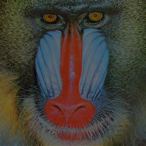
Optimized
How do we make this function quick? It's actually not that hard! The compiler does most of the work for us - and in general trying to out-optimize the compiler can be a long and painful battle not often worth fighting. The one big change though is that we get a whole lot simpler: let the user handle the image-rs stuff, and just give the the function an input and output buffer.
pub fn dim(bytes: &[u8], out: &mut [u8], factor: u8) {
for (n, i) in bytes.iter().enumerate() {
out[n] = i/factor;
}
}
Glancing at the assembly output of cargo asm (an awesome tool you can install with cargo install cargo-asm!) we might be disappointed to see that the compiler is not using SIMD instructions to dim many bytes of RGB at once!
; ... stuff above ; out[n] = i/factor; ldrb w11, [x9] add x12, x9, #1 and w9, w4, #0xff udiv w9, w11, w9 ; <-- only a udiv?? really? ; stuff below...
This is likely due to the fact that ARM's NEON intrinsics (their version of SIMD) don't have an instruction for unsigned 8-bit integer divide, which I would only find out later.
We can do a bit better though, since the assignment does specifically say we want to dim by half, and so the generality of a factor argument is technically not needed. We can then instead hard code division by 2 into a dim2 function like so:
pub fn dim2(bytes: &[u8], out: &mut [u8]) {
for (n, i) in bytes.iter().enumerate() {
out[n] = i/2;
}
}
Looking at the assembly output there shows that it now uses the SIMD we desired: dimming 16 bytes of the image at a time! It also uses a slightly faster right shift instruction, which makes sense since dividing by two is equivalent to shifting a number right in binary (just like how 12/10 = 1.2)!
; ... stuff above ; out[n] = i/2; ldr q0, [x10], #16 ushr.16b v0, v0, #1 ; <-- yay! SIMD and a faster instruction ; stuff below ...
We can further demonstrate the improvement by using criterion, another great Rust tool for benchmarking. Let's quickly try generating random images of exponentially increasing size and see how they compare!
You may notice I put the number two in a black_box, which is a utility from criterion that makes values opaque to the compiler so it doesn't be too clever when optimizing. It's likely an overly paranoid usage here though, as as it shouldn't be able to do much about it.
fn bench_dims(c: &mut Criterion) {
let mut group = c.benchmark_group("Dimming");
for sz in 8..14 {
let sz = 2_u32.pow(sz);
let img = utils::gen_image(sz);
group.bench_with_input(BenchmarkId::new("dim", sz), &img, |b, i| {
let (w, h) = i.dimensions();
let mut out: Vec<u8> = vec![0; (w*h*3) as usize];
let bytes = i.as_bytes();
b.iter(|| optimized::cpu::dim(&bytes[..], &mut out[..], black_box(2)))
});
group.bench_with_input(BenchmarkId::new("dim2", sz), &img, |b, i| {
let (w, h) = i.dimensions();
let mut out: Vec<u8> = vec![0; (w*h*3) as usize];
let bytes = i.as_bytes();
b.iter(|| optimized::cpu::dim2(&bytes[..], &mut out[..]))
});
}
}
We can then visualize the difference:
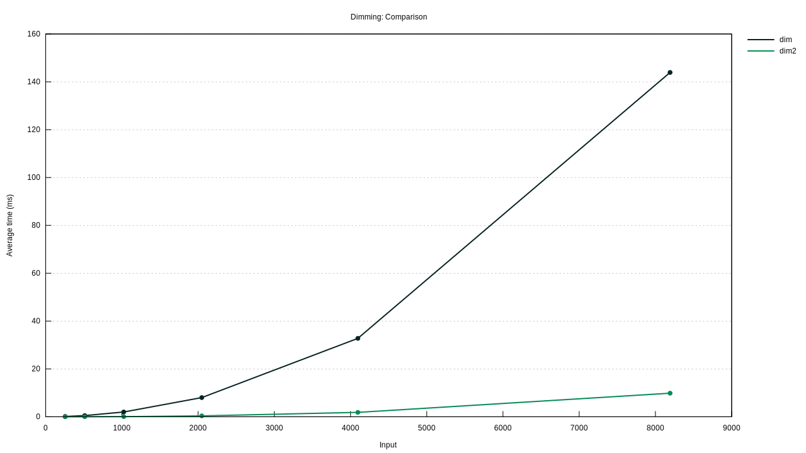
Woah! That's a pretty serious difference, although it makes some sense given how dim2 not only processes 16 bytes at a time but also uses a right shift. They're both still increasing at the same rate, but even that linear speedup has a very distinct difference in real world cases.
Exercise 2: Convert to greyscale
Implement a function that takes in an RGB color image and outputs that same image in grayscale.
Mostly the same boilerplate, although I use image-rs' direct pixel grabbing interface this time. Addition of the R, G, and B values requires widening the bytes to 16-bit so there aren't any overflows and then casting back to an 8-bit int in the end.
pub fn greyscale(img: DynamicImage) -> Result<DynamicImage> {
let (w, h) = img.dimensions();
let mut out: Vec<u8> = vec![0; (w*h) as usize];
for (n, i) in img.pixels().enumerate() {
let vals = i.2.0;
let sum = vals[0] as u16
+ vals[1] as u16
+ vals[2] as u16;
out[n] = (sum/3) as u8;
}
let buf = ImageBuffer::from_vec(w, h, out)
.ok_or(anyhow!("Couldn't convert buffer."))?;
Ok(DynamicImage::ImageLuma8(buf)) // encode image as greyscale
}
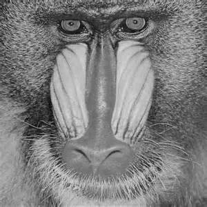
Exercise 3: RGB exclusion
Implement a function that takes in an image and a channel, and returns an image without the specified channel.
For convienence, this function takes a character instead of an index, and then just maps it to one using a small switch (match really) statement. This is also handleable with a good map call, and so for succinctness I went with that again.
pub fn rgb_restrict(img: DynamicImage, channel: char) -> Result<DynamicImage> {
let (w, h) = img.dimensions();
let mut out: Vec<u8> = Vec::with_capacity((w*h*3) as usize);
let index = match channel {
'R' => 0,
'G' => 1,
'B' => 2,
_ => { return Err(anyhow!("Invalid color channel")); }
};
out.extend(&mut
img.as_bytes()
.iter()
.enumerate()
.map(|(n,i)| if n % 3 == index { 0 } else { *i })
);
let buf = ImageBuffer::from_vec(w, h, out)
.ok_or(anyhow!("Couldn't convert buffer"))?;
Ok(DynamicImage::ImageRgb8(buf))
}
Running this with each of the channels R, G, B gives us the following images:
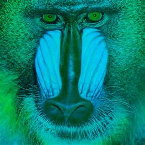
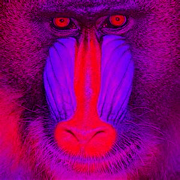
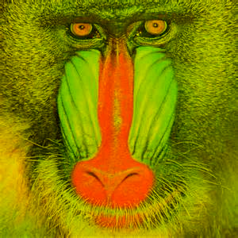
Optimized
I didn't forsee there being a nice way to optimize this any more, so I once again just went for the simplification route, letting the compiler do its best and stripping away unnecessary features (like the nice character to channel index converter).
pub fn exclude(bytes: &[u8], out: &mut [u8], index: usize) {
for n in 0..bytes.len() {
if n % 3 == index {
out[n] = 0;
}
}
}
No SIMD to gain here, unfortunately.
Advanced Exercise 1
Implement a function that takes in an image and an LAB channel, and returns an image without the specified channel.
I used a rust library for color space handling called palette - it provides IntoColor and FromColor traits that allow for conversion between a number of predefined color sets: Lab, Srgb, Hsv, etc. Reading ahead a little bit, I noticed the next exercise had us do something very similar but with HSV, so I went ahead and did a bit of generalization.
Let's define a ColorChannel trait that requires a struct be convertible to and from Srgb as well as support zeroing out a user-supplied channel.
pub trait ColorChannel: IntoColor<Srgb> + FromColor<Srgb> {
fn zero_channel(&mut self, channel: char) -> Result<()>;
}
We can then quickly implement this trait for Lab:
impl ColorChannel for Lab {
fn zero_channel(&mut self, channel: char) -> Result<()> {
match channel.to_ascii_uppercase() {
'L' => self.l = 0.0,
'A' => self.a = 0.0,
'B' => self.b = 0.0,
_ => { return Err(anyhow!("Invalid color channel")); }
}
Ok(())
}
}
Now with this out of the way, we can implement the restriction function generically for any color space Space by converting each pixel's RGB value to it, zeroing out the user supplied channel, and converting it back to RGB.
pub fn restrict<Space: ColorChannel>(img: DynamicImage, channel: char) -> Result<DynamicImage> {
let (w, h) = img.dimensions();
let mut out: Vec<u8> = Vec::with_capacity((w*h*3) as usize);
for i in img.pixels() {
let rgb = Srgb::from_components(
(i.2.0[0], i.2.0[1], i.2.0[2])
).into_format::<f32>();
let mut color: Space = rgb.into_color();
color.set_channel(channel)?;
let orig: Srgb = color.into_color();
let orig = orig.into_format::<u8>().into_components();
out.extend([orig.0, orig.1, orig.2]);
}
let buf = ImageBuffer::from_vec(w, h, out)
.ok_or(anyhow!("Couldn't convert buffer"))?;
Ok(DynamicImage::ImageRgb8(buf))
}
We can then restrict an image's L channel in LAB space with the following code:
let out = restrict::<Lab>(img, 'L').unwrap();
Doing this for each of the channels yields the following images:
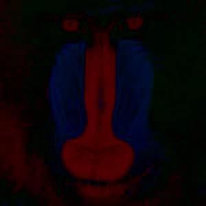
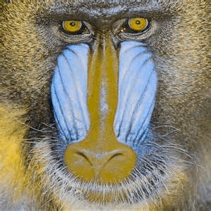
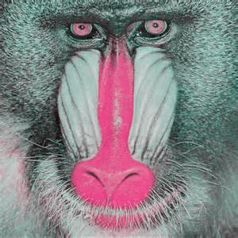
What is LAB?
Explain what the L, A and B channels are and what happens when you take away the L and A channels.
The LAB colorspace (CIELAB? L*a*b*?) is one designed to better match human perception: the L channel represents the lightness of the image, the channel is a color scale from red to green, and the B channel is a color scale from orange to blue. This is because humans generally process color in this manner: you can't picture an "orangish blue" or a "reddish green" because your brain perceives colors as a scale between them.
We can expect taking away the L (lightness) and A (red-green) scales to provide us with a very dim image that primarily consists of orange and blue.
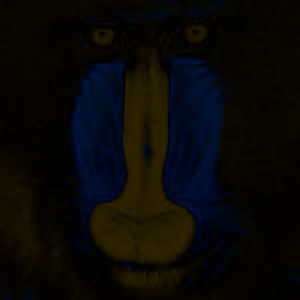
And that's what we see!
Advanced Exercise 2
Explain what the H, S and V channels are and what happens when you take away the both the H and S channels.
It may help you to implement a function that performs HSV decomposition and removes these channels; this is optional.
Since we implemented the restrict function in a generic manner, all we need to do is implement the ColorChannel trait for HSV! The one notable difference is that since hue is an angle we have to initialize it more intentionally.
impl ColorChannel for Hsv {
fn zero_channel(&mut self, channel: char) -> Result<()> {
match channel.to_ascii_uppercase() {
'H' => self.hue = RgbHue::from_degrees(0.0),
'S' => self.saturation = 0.0,
'V' => self.value = 0.0,
_ => { return Err(anyhow!("Invalid color channel")); }
}
Ok(())
}
}
The H channel of an HSV color is hue, an angle describing a position in a standard color wheel. The S channel, saturation, is roughly a measure of the intensity of the color. Finally, the V channel represents value which is a measure of how bright the color is.
Thus, dropping H (hue) and S (saturation) should give a equivalent of a greyscale image: an image with the default hue (red) but no color intensity (so ultimately grey) that still retains brightness (hence greyscale).
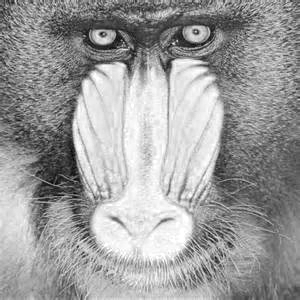
Once again, that's what we see!
Advanced Exercise 3
Implement the following method, which takes in two images and returns a new image where the left half of the image is the left half of image1 and the right half of the image is the right half of image2. Exclude the specified channel for the given image.
First off, let's make a function that combines images. image-rs has a nice feature where you can generate an image from a lambda function that returns pack the value of a given pixel coordinate. Combined with the utilities for fetching a pixel from an image given some coordinates, this makes generating a combined image quite simple.
pub fn combine(img: DynamicImage, img2: DynamicImage) -> Result<DynamicImage> {
if img.dimensions() != img2.dimensions() {
return Err(anyhow!("Images not same size"));
}
let (w, h) = img.dimensions();
let img = ImageBuffer::from_fn(w, h, |x, y| {
if x > w/2 {
img2.get_pixel(x, y)
} else {
img.get_pixel(x, y)
}
});
Ok(DynamicImage::ImageRgba8(img))
}
Since we already have a way of restricting RGB channels, we can now use both to build up this function.
pub fn fancy_combine(img1: DynamicImage, img2: DynamicImage, channel1: char, channel2: char) {
let img2 = rgb_restrict(img2.clone(), channel1).unwrap();
let img1 = rgb_restrict(img1.clone(), channel2).unwrap();
combine(img1, img2).unwrap()
}
Using this we can now make a combined image with distinctly excluded channels!
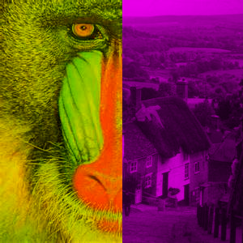
Advanced Exercise 4
Implement a function that takes a single image, and performs a different operation to each of the 4 quadrants of the image, returning an image that merges the 4 quadrants back together.
We can use the same lambda-based method but handle each corner differently:
pub fn quarters(img: DynamicImage) -> DynamicImage {
let (w, h) = img.dimensions();
let img = ImageBuffer::from_fn(w, h, |x, y| {
let orig = img.get_pixel(x, y);
if x > w/2 && y > h/2 {
Rgba::<u8>([orig[0].checked_mul(2).unwrap_or(255), orig[1]/2, orig[2], orig[3]])
} else if x > w/2 && y < h/2 {
let sum = orig[0] as u16 + orig[1] as u16 + orig[2] as u16;
let avg = (sum/3) as u8;
Rgba::<u8>([avg, avg, avg, orig[3]])
} else if x < w/2 && y > h/2 {
Rgba::<u8>([orig[2], orig[1], orig[0], orig[3]])
} else {
Rgba::<u8>([orig[0], orig[1], orig[2], orig[3]/4])
}
});
DynamicImage::ImageRgba8(img)
}
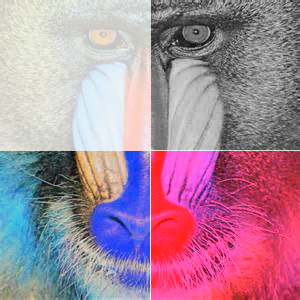